React
Reconciliation
React
- a JS library for building UI;
- maintained by Facebook as an open source project;
- has become highly popular because of its extra simplicity and flexibility.
Question
Why is React really so fast?
DOM
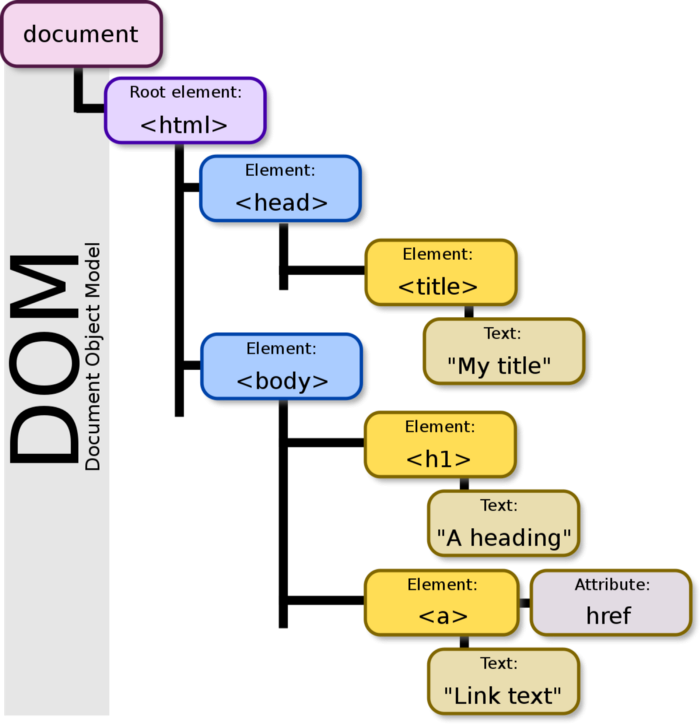What's the problem with DOM?
What's the problem with DOM?
When we do:
document.getElementById('elementId').innerHTML = "New Value";What's the problem with DOM?
When we do:
document.getElementById('elementId').innerHTML = "New Value";Browser does the following actions:
- parses the HTML
- removes the child element of elementId
- updates the DOM with the “New Value”
- re-calculates the CSS for the parent and child
- updates the layout, i.e. each elements exact co-ordinates on the screen
- traverses the render tree
- and paints it on the browser display
What's the problem with DOM?
Re-rendering the UI after the DOM updation can sloooooow any web application.
What does React propose?
What does React propose?
The concept of the virtual DOM (VDOM)!
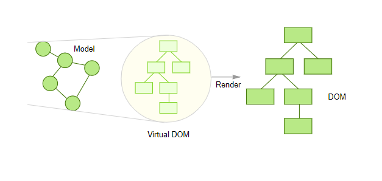What's the benefit of having the VDOM?
What's the benefit of having the VDOM?
React can update only the necessary parts of the DOM.
This process through which React determines which parts need to be changed is called reconciliation.
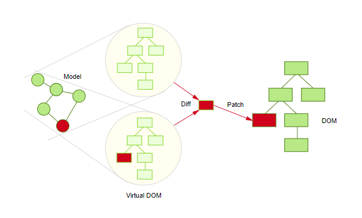Ready to learn more?
How does React detect changes in UI?
How does React detect changes in UI?
React uses observables instead of dirty checking to detect change.
How does React compare 2 virtual DOMs?
How does React compare 2 virtual DOMs?
O(n3)???
How does React compare 2 virtual DOMs?
O(n3)???
React implements a heuristic O(n) diff algorithm.
Diff algorithm strategies:
1. Tree diff
Breadth First Search
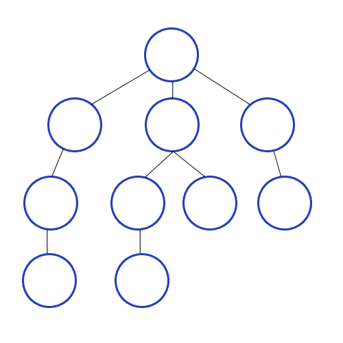 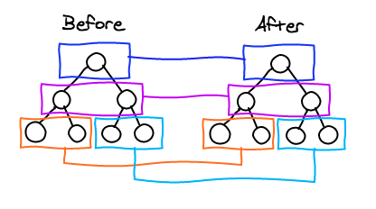Sub-tree update
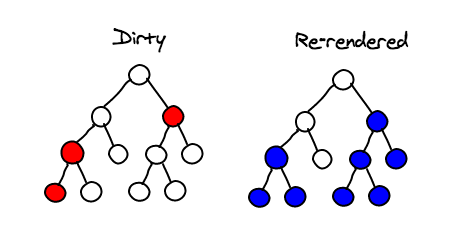2. Component diff
2.1. Two elements of different types will produce different trees.
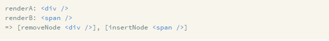 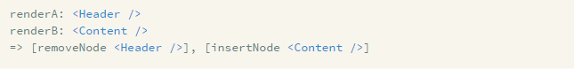2.2. React compares the attributes and updates only the modified ones.
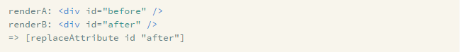 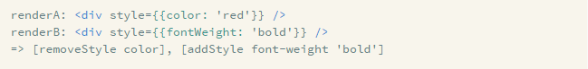3. Element diff
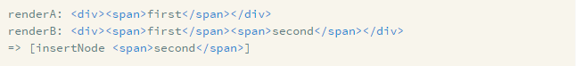 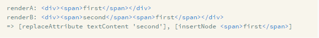A batch update mechanism:
The real DOM is updated just once during the event loop.
How can developers help React to be fast?
How can developers help React to be fast?
- Apple
- Banana
- Lemon
- Apple
- Banana
1. The developer can hint at which child elements may be stable across different renders with a key prop.
- Apple
- Banana
- Lemon
- Apple
- Banana
2. The developer can use special methods to control the reconciliation:
- componentWillReceiveProps({}) - to check if the current component can use the given property;
- shouldComponentUpdate({}) - to check if the current component will update either on state or property change.
3. The developer can hide and display nodes through CSS instead of actually removing and adding DOM nodes.
4. The developer can use a React.PureComponent, make data immutable and use other methods.
Thank you for your attention